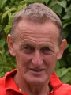

Vi vet vad som krävs för ett lyckat träningsläger
Högby if i Löttorp på norra öland har lång erfarenhet av at arrangera träningsläger för föreningar från hela Sverige.
Under årens lopp är det många som besökt oss for att komma tillbaka igen och igen. Förklaringen till det är flera. Dels kan vi erbjuda bra anläggningar och träningsföhållanden som uppsakttas av både utövare och ledareoch som passar såväl lagidrotter som inviduella sporter. Dels kan vi erbjuda bra faciliteter runt omkring, till exempel boende i olika former och prisklasser.
En annan inte helt oväsentlig sak är solen ofta lyser på norra Öland. År efter år brukar vi ligga i topp när det gäller antalet soltimmar i hela Sverige.
Nu hoppas vi att ni också vill komma!
Fotboll
Vi har fina, välsköttafotbollsplaner som till och med lockat allsvenska fotbollslag att komma hit för att träna inför seriestarten.
dessutom har vi en lång sesong. När det fortfarande ligger snö kvar på marken på många håll i Sverige kan ni träna på gräs här redan från början av mars. Planhyra och minst två träningspass per dag ingår alltid i priset. Vi har också en fullskalig konstgräsplan som klar att användas från och med i sommar.

Friidrott
Många friidrottsföreningar har förlagt sina träningsläger hit.
Orsaken är enkel:
Träningsförhållandena är bra och miljön är avkopplande.
Vi erbjuder en all vädersanläggning med sex banor och möjlighet att hyra elektronisk tidtagning. Alldeles i närheten finns det dessutom tillgång till en välutrustad sporthall med alla bekvämligheter. anläggningshyra och två träningspass per dag ingår i priset.

Övriga Sporter
Sporthallen i Löttorp lämpar sig för många olika idrotter, t.ex. innebandy, handboll, basket och gymnastik.
I direkt anslutning till sport-hallen ligger Åkerbobadet men en fin 25-meters utomhusbassäng som man kan hyra extra.
Mat och Boende
Det finns sovsalar eller stugor som ni kan bo in
Frukost, Lunch och middag kommer med catering till anläggningen eller så äter ni på någon av resturangerna som finns i närheten av anläggningen
Är du intresserad så ta kontakt med någon av dessa
Carl-Gustaf Nilsson
070-444 31 02
0480-285 39
John-Erik Svensson

070-693 87 44
0485-387 44
Eller på Högby IF:s mail